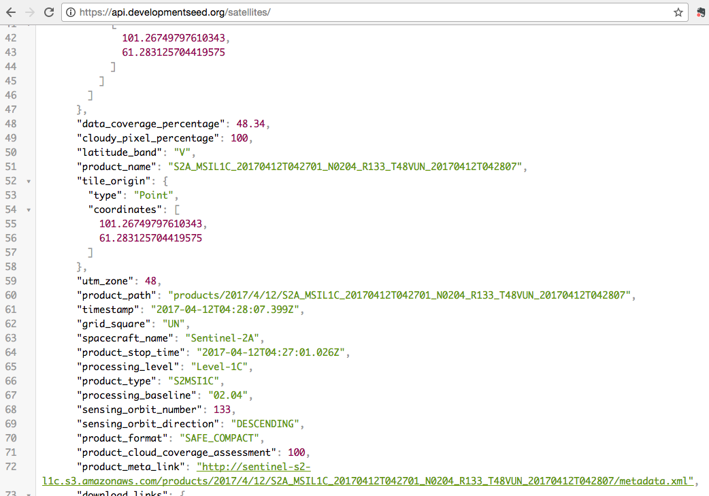
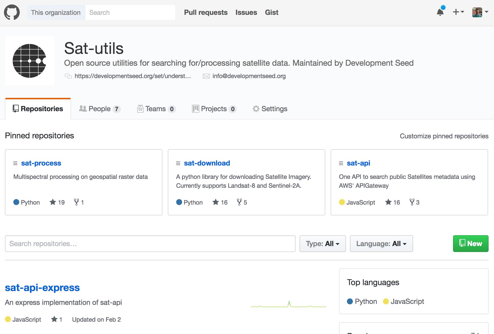
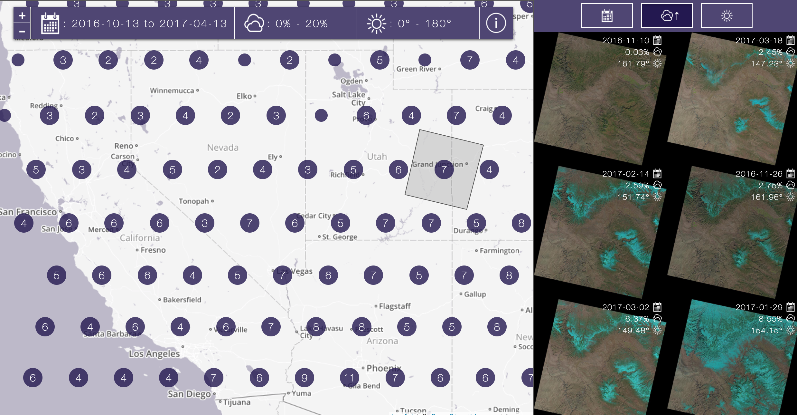
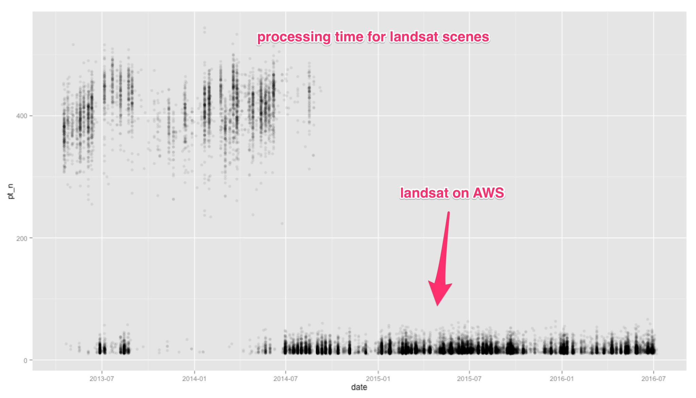
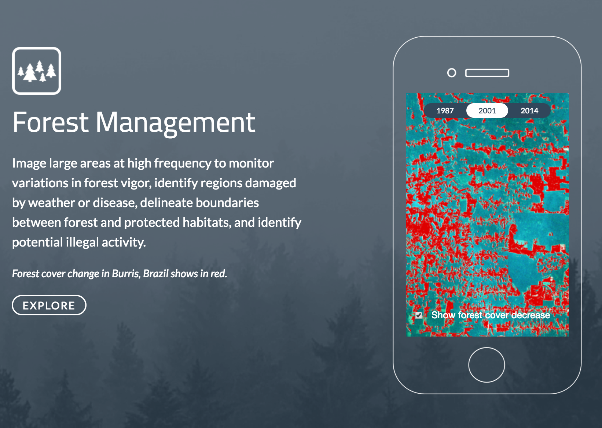
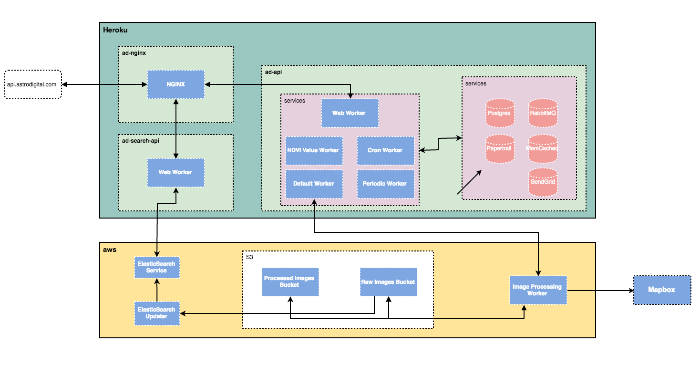
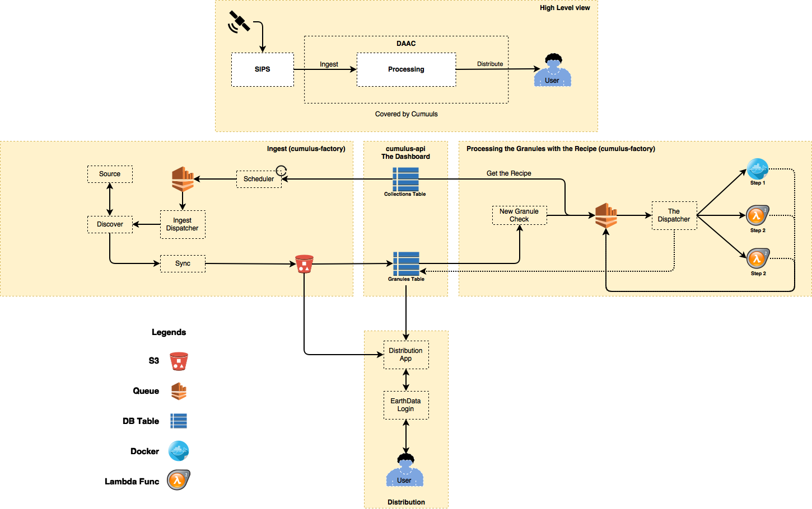
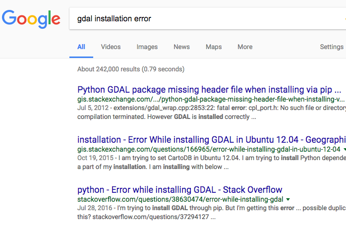
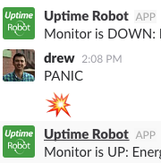

Processing Planetary-Scale Data in the Cloud
ESIP Tech Dive April 2017
Drew Bollinger @ Development Seed
I.Background
data revolution - at the point where earth science data is not just being used by researchers, but by real people in decisions they make every day; has been the case for a while in a few areas like weather, but now also for the farmer or the disaster responder or the department of transportation
Data Revolution
Earth science data, not just for scientists
but empowering this revolution will require some changes in the way we package and share data
Change the way we package and share data
this revolution will be powered by apps--web apps mobile apps alexa and Siri
Apps
we aren't earth science experts. We aren't deploying satellites or sensor. We aren't creating data formats. We are good at manipulating data and making it useful to end users, especially those working on environmental and social problems. That's why we are excited to be talking to ESIP. NASA, USGS, HDF group: you folks are our heros. You make the data that gets us out of bed on the morning and that we dream about all night. Thank you.
Getting data from (and into) the right hands
II.Satellite Data
how we started and why we did this
Our introduction to the space



along the way a great thing happened- Landsat on AWS, here is what that allowed us to do. There wasn't any data that you couldn't get on earth explorer, but people loved it because no log in, just the band combination you want
Landsat on AWS

MODIS on AWS to support ag products
MODIS on AWS
what we love about earth on AWS data approach (and what we need from all of you)
We
♥ this approach. Let's keep doing it:
- Community Engagement + Feedback
- Predictable file naming structure
- Thumbnails
- Accessible metadata
- File format, compression, and tiling
hired by AD to expand on this ... Agricultural monitoring, forest monitoring, ... Without launching a satellite!

ML and huge computational processes on huge datasets
Computation on large datasets (like machine learning)
III.Cloud
we've had the opportunity to work on cloud management for AD and modis on AWS and recently for NASA where we are building cumulus, a framework for injest, processing, archival, and publishing of streaming earth science data; cumulus is open source, coming to a repo soon (going through NASA vetting process)


approaches: geolambda, serverless, avoiding bottlenecks, tried AWS data pipelines, moved away from for cost and spin up time, looking at step functions
- Geolambda
- Serverless
- Pipelines


Y'all are awesome. We love to make your data sing and get it to the hands of people who need it. Please let us know anytime if there is anything we can do to pay back what you do.
Thank you